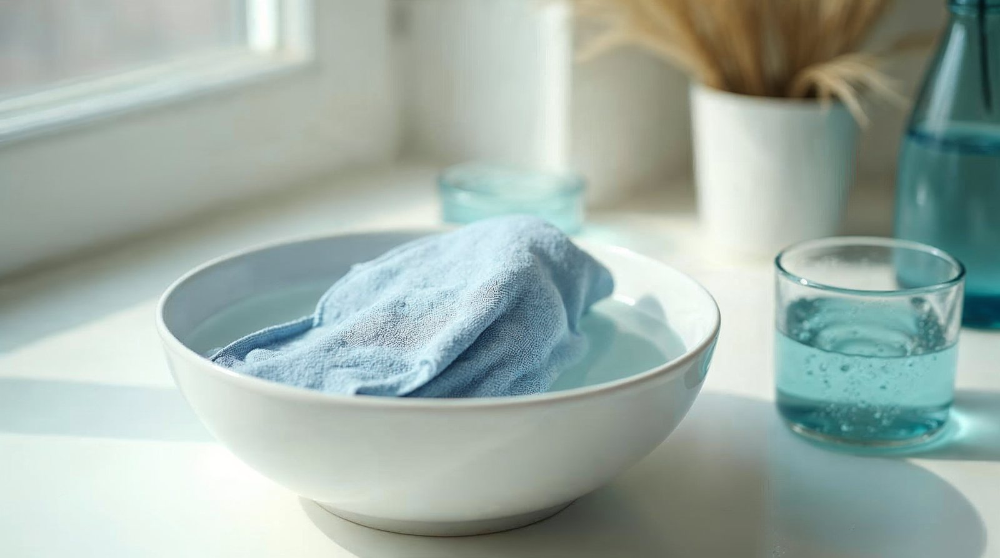
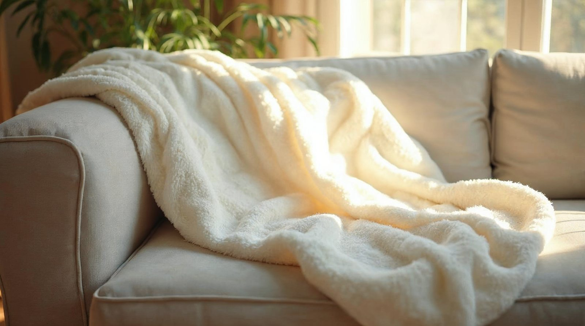
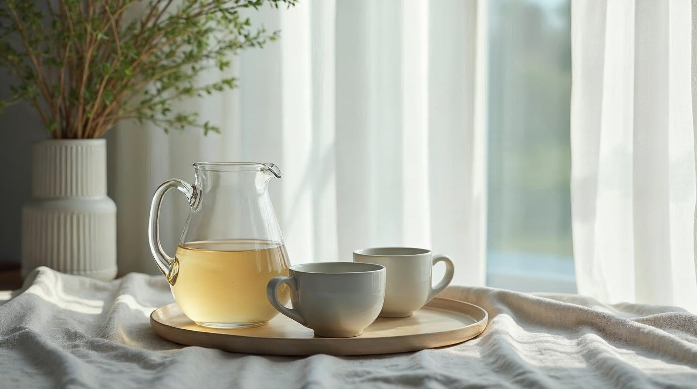
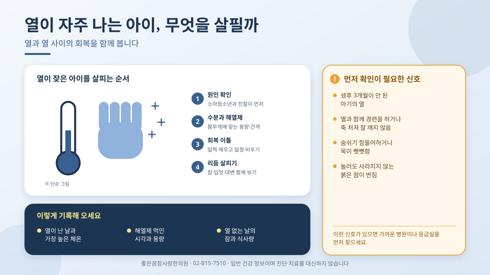

이종호 한의사 감수좋은꿈참사랑한의원 대표원장 (한의사 면허번호 19769)발행 2026-11-26 · 수정 2026-11-27
이 글의 차례
새벽 두 시, 아이 이마에 손을 얹었다가 깜짝 놀라 불을 켜는 밤이 있어요. 체온계에는 39도 가까운 숫자가 떠 있고, 아이는 볼이 발갛게 달아오른 채 칭얼거립니다. 해열제를 먹이고 물수건을 짜면서 이런 생각이 드시죠. '지난달에도, 그 전 달에도 이랬는데. 우리 아이는 왜 이렇게 열이 자주 날까.'
진료실에서 부모님들께 제일 많이 듣는 걱정 가운데 하나가 이 얘기예요. 다른 아이는 감기에 걸려도 콧물만 조금 흘리고 지나가는데, 우리 아이는 꼭 고열로 번지고 며칠씩 앓는다고요. 밤새 체온계를 들고 계셨던 얼굴에는 피곤함과 불안이 같이 묻어 있거든요. 그 마음, 저는 충분히 이해합니다.
먼저 안심부터 드릴게요. 열 자체는 몸이 바이러스나 세균과 싸우고 있다는 표시예요. 열이 오른다고 아이 몸이 망가지고 있는 게 아니거든요. 단체 생활을 막 시작한 아이들이 한동안 열을 자주 내는 것도 원래 그래요.
그러니까 사실은 두 가지를 나눠서 보셔야 해요. '열이 난다'는 것과 '열 때문에 아이가 지친다'는 건 다른 얘기예요. 열이 너무 잦으면 잠과 식사가 자꾸 끊기고, 회복할 틈 없이 다음 감기를 맞게 되면서 아이도 부모님도 지치게 되는 거죠.
그래서 저는 열이 잦은 아이를 볼 때 열이 나는 날보다 열이 없는 날을 더 궁금해해요. 왜인 줄 아세요? 열과 열 사이에 아이가 얼마나 잘 먹고, 잘 자고, 기운을 되찾는지가 다음 열을 얼마나 버틸지와 가깝게 이어져 있거든요.

열은 몸에서 어떤 일을 하나요
열은 뇌 속 체온 조절 중추가 기준 온도를 잠시 올려 둔 상태입니다. 바이러스나 세균이 들어오면 몸은 체온을 높여 면역 세포가 더 활발하게 움직이도록 돕습니다. 그래서 열이 오르는 동안 아이가 오들오들 떨고 손발이 차가워지는 것도, 몸이 열을 붙잡아 두려는 과정입니다.
열이 정점에 이르면 아이는 얼굴이 붉어지고 숨이 조금 빨라지며 보채기 쉽습니다. 그러다 열이 내려가는 시기가 오면 땀을 흘리고 손발이 다시 따뜻해집니다. 이 흐름을 알고 계시면 손발이 차다고 해서 이불을 더 덮어 주거나, 땀이 난다고 해서 급히 옷을 벗기는 일을 줄일 수 있습니다.
열의 높이보다 중요한 것은 아이의 모습입니다. 39도가 넘어도 해열제를 먹고 열이 내린 뒤 놀고 먹는 아이가 있고, 38도 안팎인데도 축 처져 눈을 잘 맞추지 않는 아이가 있습니다. 소아청소년과 선생님들도 숫자와 함께 아이의 기운, 먹는 양, 소변 양을 함께 보십니다.
왜 어떤 아이는 유난히 열이 자주 날까요
아이들은 커 가면서 수많은 바이러스를 처음 만납니다. 특히 어린이집이나 유치원에 처음 다니기 시작한 해에는 한 해에 감기를 여러 번 앓는 것이 흔한 일입니다. 처음 만나는 바이러스가 많을수록 열이 날 일도 많아집니다.
- 단체 생활을 시작한 지 얼마 되지 않아 새로운 바이러스를 자주 만나는 경우
- 형제자매가 있어 집 안에서 감기가 돌고 도는 경우
- 잠드는 시각이 늦거나 자주 깨서 회복할 시간이 짧은 경우
- 입이 짧아 앓고 난 뒤 기운을 되찾는 속도가 더딘 경우
- 코막힘이나 편도, 아데노이드 때문에 입을 벌리고 자는 경우
- 중이염이나 요로 감염처럼 열의 원인이 따로 숨어 있는 경우
마지막 경우는 특히 놓치지 않으셔야 합니다. 콧물이나 기침 없이 열만 반복된다면 귀나 소변, 다른 곳의 감염이 원인일 수 있어서 소아청소년과에서 진찰과 검사를 받아 보시는 것이 먼저입니다. 열이 몇 주 간격으로 규칙적으로 반복되는 경우도 소아청소년과 선생님께 말씀드려 확인하시는 것이 좋습니다.
체온은 어떻게 재야 헷갈리지 않나요
열이 잦은 아이를 키우다 보면 체온계 숫자에 하루가 흔들립니다. 그런데 같은 아이라도 어디에서, 어떤 체온계로 재느냐에 따라 숫자가 조금씩 다르게 나옵니다. 귀, 이마, 겨드랑이 체온은 서로 몇 부 차이가 날 수 있어서, 집에서는 한 가지 방법을 정해 꾸준히 같은 방법으로 재시는 것이 좋습니다.
귀 체온계는 귀를 살짝 뒤로 당겨 귓구멍이 곧게 펴진 상태에서 재야 숫자가 정확합니다. 막 밖에서 들어왔거나 울고 난 직후, 이불 속에서 땀을 흘리고 있을 때는 숫자가 실제보다 높거나 낮게 나올 수 있으니 몇 분 쉬고 다시 재 보세요.
열이 오르는 중인지 내리는 중인지도 함께 봐 주세요. 손발이 차갑고 몸을 떨면 오르는 중이고, 땀이 나고 손발이 따뜻해지면 내리는 중인 경우가 많습니다. 이 흐름을 적어 두시면 해열제를 먹일 때를 정하는 데도, 진료실에서 이야기를 나눌 때도 큰 도움이 됩니다.
해열제와 수분은 어떻게 챙기나요
해열제는 열을 완전히 없애려는 약이라기보다, 아이가 덜 힘들게 먹고 자도록 돕는 약입니다. 그래서 열이 38도를 넘었더라도 아이가 잘 놀고 잘 자고 있다면 서둘러 먹이지 않아도 되는 경우가 많고, 반대로 열 때문에 많이 보채고 잠을 못 잔다면 먹여서 쉬게 해 주는 편이 좋습니다.
해열제는 아이 몸무게에 맞는 용량과 간격을 지키는 것이 가장 중요합니다. 두 가지 성분을 번갈아 쓰는 방법은 소아청소년과나 약국에서 정확한 시간표를 안내받은 경우에만 하시고, 먹인 시각과 용량을 꼭 적어 두세요. 밤에 여러 사람이 번갈아 아이를 볼 때 같은 약을 두 번 먹이는 일이 생기기 쉽습니다.
열이 나면 땀과 숨으로 물이 많이 빠져나갑니다. 물, 보리차, 묽은 미음처럼 아이가 잘 받아먹는 것을 조금씩 자주 주세요. 한 번에 많이 먹이려 하면 토하기 쉬우니, 몇 모금씩 나눠 주는 쪽이 아이에게 편합니다. 소변 보는 횟수가 평소보다 많이 줄었는지도 함께 살펴봐 주세요. 기저귀를 쓰는 아이라면 평소보다 기저귀가 얼마나 덜 젖는지를 보시면 됩니다.
미지근한 물수건으로 몸을 닦아 주는 것은 아이가 편안해한다면 해도 괜찮지만, 찬물이나 알코올로 닦는 것은 오히려 떨림을 키울 수 있어 권하지 않습니다. 방 온도는 너무 덥지 않게, 옷은 얇게 한 겹 정도로 입혀 열이 빠져나갈 길을 열어 주세요.
열이 잦은 아이와 감기를 자주 앓는 아이는 같은가요
비슷해 보이지만 조금 다르게 봅니다. 감기를 자주 앓더라도 콧물과 기침이 주로 오고 열은 하루 이틀 미열로 지나가는 아이가 있고, 감기 증상은 가벼운데 매번 고열로 번지는 아이가 있습니다. 후자의 경우 열이 오르는 몸의 반응이 큰 편이라고 볼 수 있습니다.
또 열이 날 때마다 배가 아프거나 토하는 아이, 열이 나면 입맛이 며칠씩 돌아오지 않는 아이, 열이 내린 뒤에도 기침이 오래 남는 아이처럼, 열에 따라오는 모습도 아이마다 다릅니다. 진료실에서는 이 따라오는 모습을 함께 보면서 아이 몸이 어디에서 더 쉽게 지치는지를 살핍니다.
열성 경련을 겪은 적이 있는 아이라면 부모님의 걱정이 훨씬 크실 겁니다. 열성 경련은 소아청소년과에서 상태를 확인받고 안내받은 대로 대처하시는 것이 기본이며, 한의원에서는 그 안내를 바꾸지 않습니다. 다만 열과 열 사이의 회복을 돕는 부분은 함께 상의하실 수 있습니다.

열이 내린 뒤의 며칠이 중요한 이유
열이 내리면 부모님은 한숨 돌리시고, 아이는 다시 어린이집이나 학교로 돌아갑니다. 그런데 열이 내린 직후의 아이 몸은 아직 회복 중입니다. 입맛이 덜 돌아왔고, 잠도 얕으며, 기운도 반쯤 차 있는 상태입니다. 이때 다시 바이러스를 만나면 쉽게 다음 감기로 이어집니다.
그래서 열이 내린 뒤 하루 이틀은 일찍 재우고, 소화가 잘되는 따뜻한 음식을 조금씩 자주 먹이며, 바깥 활동을 천천히 늘려 가시길 권합니다. 등원 여부는 소아청소년과의 안내와 기관의 기준을 따르시되, 돌아간 뒤 첫 며칠은 하원 후 일정을 가볍게 잡아 주시면 좋습니다.
형제자매가 있는 집이라면 한 아이가 앓고 나면 다른 아이가 이어서 앓는 일이 흔합니다. 수건과 컵을 따로 쓰고, 아픈 아이가 쓴 장난감은 한 번 닦아 두는 정도만 해도 집 안에서 감기가 돌고 도는 일을 줄이는 데 보탬이 됩니다. 부모님도 번갈아 쉬는 시간을 정해 두세요. 간호하는 사람이 먼저 쓰러지면 회복의 리듬 전체가 흔들립니다.
먼저 이렇게 여쭙니다
처음 오시면 대략 이런 순서로 여쭙니다. 미리 떠올려 오시면 이야기가 훨씬 수월해집니다.
- 최근 석 달 동안 열이 난 횟수와 한 번에 며칠씩 났는지요?
- 열이 날 때 함께 있었던 증상은 무엇인가요? 콧물, 기침, 귀 통증, 배앓이, 구토 등
- 소아청소년과에서 들은 진단명과 처방약은 무엇인가요?
- 열이 없을 때 아이의 잠, 입맛, 대변은 어떤가요?
- 어린이집이나 학교에 다니기 시작한 시기, 형제자매가 있는지요?
- 열성 경련이나 입원한 적이 있는지요?
정확하게 기억나지 않으셔도 괜찮습니다. 아래 기록표를 2~3주만 적어 오셔도 큰 도움이 됩니다.

일상에서 먼저 해 볼 수 있는 것
열이 잦은 아이를 위해 집에서 할 수 있는 일은 거창하지 않습니다. 회복할 시간을 넉넉히 주는 쪽으로 하루를 조금씩 바꾸는 것이 중심입니다.
- 잠드는 시각을 일정하게 맞추고, 아픈 뒤에는 평소보다 30분 일찍 재우기
- 열이 내린 뒤 하루 이틀은 하원 뒤 일정을 비워 두기
- 물과 따뜻한 음식을 조금씩 자주 주고, 찬 음료와 아이스크림은 회복 뒤로 미루기
- 외출하고 돌아오면 손 씻기와 양치를 놀이처럼 함께하기
- 방 습도를 너무 건조하지 않게 맞추고 하루 몇 번 환기하기
- 옷은 땀이 나면 갈아입히기 쉽게 얇은 옷을 겹쳐 입히기
입이 짧은 아이라면 앓고 난 뒤 억지로 많이 먹이려 하기보다, 아이가 좋아하는 부드러운 음식으로 하루 먹는 횟수를 늘리는 편을 권합니다. 입맛은 대개 기운이 돌아오면서 함께 돌아옵니다.
한의원에서 함께 살필 수 있는 경우
- 열이 나는 감기가 잦고, 앓고 난 뒤 회복이 유난히 더딘 경우
- 열이 내린 뒤에도 입맛이 오래 돌아오지 않고 기운이 없는 경우
- 잠이 얕고 땀을 많이 흘리며 자주 깨는 경우
- 코막힘 때문에 입을 벌리고 자는 날이 많은 경우
- 감기 뒤 배앓이나 묽은 변이 자주 따라오는 경우
좋은꿈참사랑한의원에서는 모든 분의 맥을 먼저 짚고, 혀와 배, 목 주변을 살피며, 잠과 땀, 대변, 입맛을 여쭙습니다. 진찰한 내용을 바탕으로 생활에서 바꿔 볼 것 하나와 함께 아이 몸에 맞는 관리를 상의합니다.
한약을 상의할 때는 아이가 지금 먹고 있는 약을 모두 확인하고 신중하게 정합니다. 아이가 침을 무서워한다면 억지로 하지 않고, 손으로 누르거나 문지르는 방법처럼 아이가 받아들일 수 있는 방법부터 찾습니다. 열이 나는 동안의 진료는 소아청소년과가 먼저이고, 한의원은 그 사이의 회복을 함께 살핀다고 생각해 주시면 됩니다.
이렇게 기록해 오시면 상담이 쉬워집니다
열이 잦은 아이는 기억보다 기록이 훨씬 정확합니다. 냉장고에 종이 한 장 붙여 두고 2~3주만 적어 보세요.
- 열이 난 날짜와 가장 높았던 체온, 열이 지속된 날 수
- 해열제를 먹인 시각과 용량
- 함께 있었던 증상과 소아청소년과 진단명
- 열이 없는 날의 잠든 시각과 깬 시각, 밤에 깬 횟수
- 하루 식사량을 많음·보통·적음으로 표시
- 대변 횟수와 모양
이 기록은 소아청소년과 진료 때도 그대로 보여 드리면 좋습니다. 열의 흐름이 한눈에 보이면 원인을 찾는 데도, 회복을 돕는 방향을 정하는 데도 쓸모가 큽니다.
열과 열 사이를 넉넉하게
열이 잦은 시기는 대개 영원히 이어지지 않아요. 아이가 커 가며 여러 바이러스를 만나고 몸이 그 경험을 쌓으면, 열이 나는 간격은 조금씩 벌어지는 경우가 많거든요. 지금 겪고 계신 건 아이가 자라는 길목에서 흔히 지나가는 시기일 때가 많아요.
그 시기를 지나는 동안 부모님이 지치지 않는 것도 정말 중요해요. 밤새 체온계를 들고 계셨던 날이 많았다면, 그것만으로도 이미 충분히 애쓰고 계신 거예요. 오늘 밤은 아이 곁에서 함께 조금 일찍 누워 보셔도 괜찮아요.
아이 몸을 살피는 건 제가 맡을게요. 대신 하나만 부탁드려요. 아이가 아프고 난 뒤 이틀은 평소보다 일찍 재워 주세요. 딴 건 하시던 대로 편하게 하셔도 돼요. 열이 내린 직후 며칠은 몸이 아직 회복 중이라, 잠으로 채워 주는 시간이 제일 든든하거든요.
다음에 오시면 기록표를 함께 펼쳐 놓고, 열과 열 사이의 시간이 어떻게 흘러갔는지부터 여쭐게요. 궁금한 건 그때 편하게 물어보세요.
이런 증상은 먼저 확인이 필요합니다
- 생후 3개월이 안 된 아기가 열이 나거나, 열과 함께 경련을 하거나 축 처져 잘 깨지 않는 경우
- 숨쉬기를 힘들어하거나 목이 뻣뻣하고, 눌러도 사라지지 않는 붉은 점이 번지는 경우
이런 신호가 있으면 한의원보다 가까운 병원이나 응급실을 먼저 찾으세요.
함께 읽으면 좋은 글
- 아이가 감기에 자주 걸리고 코가 막힐 때는 어떤 점을 살펴보나요?
- 어린이집에 다니면서 감기를 달고 사는 아이는 어떻게 살피나요?
- 감기만 걸리면 귀가 아프다고 하는 아이, 반복되는 중이염은 어떻게 살피나요?
- 밥 먹을 때나 잠들 때 땀을 유난히 많이 흘리는 아이는 무엇을 살피나요?
- 편도염이 자꾸 반복될 때, 목이 붓고 열이 나는 일을 줄이려면 무엇을 살피나요?

여쭙는 것
- 최근 석 달 동안 열이 난 횟수와 한 번에 며칠씩 났는지요?
- 열이 날 때 함께 있었던 증상은 무엇인가요? 콧물, 기침, 귀 통증, 배앓이, 구토 등
- 소아청소년과에서 들은 진단명과 처방약은 무엇인가요?
생활에서 해 볼 것
- 잠드는 시각을 일정하게 맞추고, 아픈 뒤에는 평소보다 30분 일찍 재우기
- 열이 내린 뒤 하루 이틀은 하원 뒤 일정을 비워 두기
- 물과 따뜻한 음식을 조금씩 자주 주고, 찬 음료와 아이스크림은 회복 뒤로 미루기
한의원에서 함께 살필 것
- 열이 나는 감기가 잦고, 앓고 난 뒤 회복이 유난히 더딘 경우
- 열이 내린 뒤에도 입맛이 오래 돌아오지 않고 기운이 없는 경우
- 잠이 얕고 땀을 많이 흘리며 자주 깨는 경우
먼저 확인이 필요한 신호
- 생후 3개월이 안 된 아기가 열이 나거나, 열과 함께 경련을 하거나 축 처져 잘 깨…
- 숨쉬기를 힘들어하거나 목이 뻣뻣하고, 눌러도 사라지지 않는 붉은 점이 번지는 경우
한눈에 보는 표
| 구분 | 핵심 |
|---|---|
| 여쭙는 것 | 최근 석 달 동안 열이 난 횟수와 한 번에 며칠씩 났는지요? 열이 날 때 함께 있었던 증상은 무엇인가요? 콧물, 기침, 귀 통증, 배앓이, 구토 등 |
| 생활에서 해 볼 것 | 잠드는 시각을 일정하게 맞추고, 아픈 뒤에는 평소보다 30분 일찍 재우기 열이 내린 뒤 하루 이틀은 하원 뒤 일정을 비워 두기 |
| 한의원에서 함께 살필 것 | 열이 나는 감기가 잦고, 앓고 난 뒤 회복이 유난히 더딘 경우 열이 내린 뒤에도 입맛이 오래 돌아오지 않고 기운이 없는 경우 |
| 먼저 확인이 필요한 신호 | 생후 3개월이 안 된 아기가 열이 나거나, 열과 함께 경련을 하거나 축 처져 잘 깨지 않는 경우 숨쉬기를 힘들어하거나 목이 뻣뻣하고, 눌러도 사라지지 않는 붉은 점이 번지는 경우 |
자주 묻는 질문
열이 몇 도부터 해열제를 먹여야 하나요?
숫자 하나로 정하기보다 아이가 얼마나 힘들어하는지를 함께 봅니다. 열 때문에 보채고 잠을 못 잔다면 몸무게에 맞는 용량으로 먹여 쉬게 해 주시고, 자세한 기준은 소아청소년과 안내를 따라 주세요.
열이 자주 나면 면역력이 약한 건가요?
단체 생활을 막 시작한 아이는 새로운 바이러스를 자주 만나 열이 잦은 경우가 흔합니다. 다만 열만 반복되거나 회복이 유난히 더디다면 소아청소년과에서 원인을 확인받고, 회복 리듬은 한의원에서 함께 살펴볼 수 있습니다.
열이 날 때 한의원에 와도 되나요?
열이 나는 동안에는 소아청소년과 진찰이 먼저입니다. 열이 내린 뒤 입맛과 기운, 잠이 돌아오지 않을 때 상의하러 오시면 됩니다.
아이가 한약을 먹어도 되나요?
아이의 몸무게와 지금 먹는 약을 모두 확인하고 신중하게 정합니다. 맛이나 양 때문에 먹기 힘들어하면 그 점도 함께 상의합니다.
열이 내리면 바로 어린이집에 보내도 되나요?
등원 기준은 소아청소년과 안내와 기관 기준을 따라 주세요. 돌아간 뒤 첫 며칠은 하원 뒤 일정을 비우고 일찍 재워 회복할 시간을 넉넉히 주시길 권합니다.
좋은꿈참사랑한의원은 재진 때 지난번 이야기부터 이어서 여쭙니다. 진료시간과 예약은 오시는 길에서 확인하세요.
어디서 상담받을 수 있나요?
좋은꿈참사랑한의원은 서울 동작구 만양로2길 2 신성빌딩 3층·5층(서울 동작구 상도동, 7호선 상도역 3번 출구 근처)에 있습니다. 한의사 3명(이종호 대표원장, 조영기 수석진료원장, 정원영 진료원장)이 진료합니다. 진료시간은 평일 09:30~20:00(점심 13:00~14:00), 토·일·공휴일 09:30~15:00이며, 방문 전 전화로 확인을 권합니다. 예약은 네이버 예약, 카카오톡 상담, 전화 02-815-7510로 받습니다.
이 글은 일반적인 건강 정보이며 개인의 진단이나 치료를 대신하지 않습니다. 증상이 있거나 복용 중인 약이 있다면 진료를 통해 확인하세요. 치료 효과는 개인마다 다를 수 있습니다.
작성 기준: 일반적으로 알려져 있는 건강 정보를 참고해 정리했습니다(대표원장 감수). 증상 기록은 1~2주 동안 하루 1회, 비슷한 시간에 적어 오시면 지난 상태와 비교하기 쉽습니다.